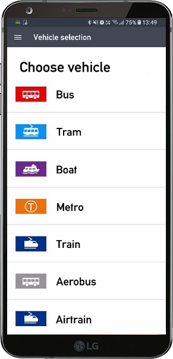
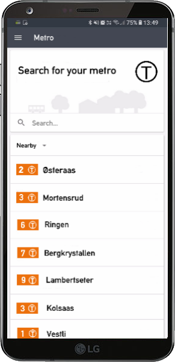
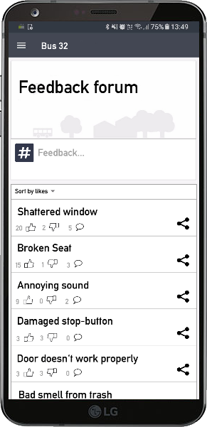

-

Choose Vehicle
We kept the overall design similar to the RuterReise application and therefore chose a simple design that is easy to navigate.
The user can access this new extension by opening the RuterReiser application and selecting RuterFeedback. Doing this will take the user to this selection page where you can choose from 7 different vehicles. You pick the vehicle you want to provide feedback for by pressing the corresponding icon.
This selection will make it easier for the user to find the correct forums for their vehicle. -

Select your Metro
In this example the user selected the Metro on the previous screen. The next step is to pick the correct Metro to make sure you are giving feedback in the proper forum.
By default the application shows nearby vehicles and lets you select the one you are currently on. If you are giving feedback after stepping off the Metro you can change the nearby option to recent or history. The RuterReiser application already has GPS tracking for other functions and will work for RuterFeedback to ensure you are sent to the correct forum.
You also have the option to search for a specific Metro if you can’t find the one you want.
-

Feedback Forum
After selecting your Metro you get sent to the feedback forum for that specific vehicle. Here you can see current topics and reply to them if you wish. You can also upvote, downvote or share the thread on social media. The user can sort the current topics by votes, comments or date.
A user can easily make a new topic by clicking on the “Feedback…” box. This box will then expand and allow the user to write.
In this specific example the user selected Bus -> Route 32 to get sent to this forum.

Voice your concerns
Help improve our public transport system with the new RuterFeedback extension.

Join the forum
Make new threads, or upvote current ones, on the forum with other users.

Share your opinion
Share your opinions on your favourite social media platform.
Why RuterFeedback?
Problem
Vandalism of public transport does not get the attention it needs.
There are plenty of vehicles that have obvious flaws, and if it got more attention from the public it would get fixed faster.
We think the problem exists because notifying Ruter is a hassle. This is due to an old and outdated system.
The current system of calling is too much trouble for most people to care.
It is not obvious how you can report a case of vandalism, and
Ruter could do a better job at letting people know how they can help.

Solution
Our proposed solution to the vandalism is to create an extension for the RuterReise application.
The main objective of this application is to get people to report vandalism.
It would be important for the application to be easy to use when reporting a problem.
A user could use the feedback function during a ride or within 24 hours after getting off.
This application will make it easier to report cases of vandalism, especially for younger travelers.
Challenges & Benefits
Challenges
Since the posts will be available to see for everyone, spam and trolling will occur.
To combat this we would implement a GPS-restriction that would only allow a customer to
give feedback if they are (or were) in the vehicle in the past 24 hours.
The application might be too difficult to use for older people,
but it would be a non-issue assuming they kept the option to call.
Benefits
People automatically get the RuterFeedback extension if they have RuterReise installed on their phone.
Having an application like this can generate different statistics that might be valuable for Ruter.
Because the application is included in RuterReise customers would not have to deal with
extra clutter on their phones.
The application will work as a base platform for Ruter, and they could expand it easily.
RuterFeedback could be expanded to include feedback on drivers or similar things. This would not public to avoid potential harrasment
and hopefully only generate proper responses.